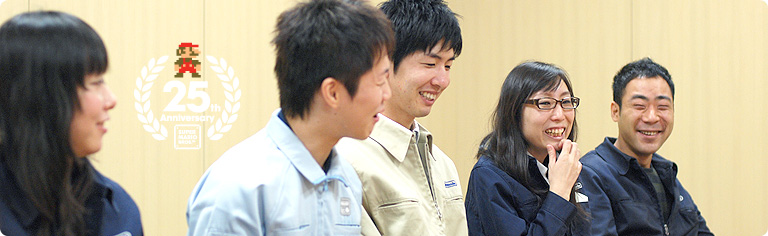

### 「スーパーマリオ２５周年」

<DIV ID="volbox-5"><P CLASS="volnum1"><A CLASS="btn-volnum1" TITLE="社長の代わりに糸井重里さんが訊く" HREF="../vol1/index.html">社長の代わりに糸井重里さんが訊く
<P CLASS="volnum2"><A CLASS="btn-volnum2" TITLE="ファミコンとマリオ 篇" HREF="../vol2/index.html">ファミコンとマリオ 篇
<P CLASS="volnum3"><A CLASS="btn-volnum3" TITLE="『スーパーマリオ』シリーズ開発経験者 篇 その１" HREF="../vol3/index.html">『スーパーマリオ』シリーズ開発経験者 篇 その１
<P CLASS="volnum4"><A CLASS="btn-volnum4s" TITLE="『スーパーマリオ』シリーズ開発経験者 篇 その２">『スーパーマリオ』シリーズ開発経験者 篇 その２
<P CLASS="volnum5"><A CLASS="btn-volnum5" TITLE="『スーパーマリオ』生みの親たち 篇" HREF="../vol5/index.html">『スーパーマリオ』生みの親たち 篇

<DIV ID="main-visual">
<H2>
<DIV ID="pagebox-wrap">
<DIV CLASS="pagebox">
<P CLASS="pagenum"><A HREF="index.html">1. １９８０年代生まれ、それぞれの『マリオ』体験
<P CLASS="pagenum"><A HREF="index2.html">2. 「近所のお兄ちゃん」に教えられて
<P CLASS="pagenum"><A HREF="index3.html">3. 遊び手からつくり手に変わって
<P CLASS="pagenum"><A HREF="index4.html">4. 「任天堂に入りたい」
<P CLASS="pagenums"><A>5. ２５年経っても変わらないこと
<P CLASS="pagenum"><A HREF="index6.html">6. 『マリオ』の遊び方とつくり方

<DIV>

<DIV ID="int-box-wrap">
<H3>
<DIV CLASS="int-box"><DIV CLASS="int-name"><P>岩田
<DIV CLASS="int-text"><P>松浦さんが自分で考えたスーパープレイで<br>とくに印象に残っているものはありますか？
<DIV CLASS="clear"><DIV CLASS="int-box"><DIV CLASS="int-name"><P>松浦
<DIV CLASS="int-text"><P>たぶんいちばん有名なのは、<br><SCRIPT LANGUAGE="JavaScript" TYPE="text/javascript">
<!--
	document.write('<A HREF="player.html?mv=movie009&amp;width=384&amp;height=256&amp;id=movie009" CLASS="thickbox movie009" TITLE="「ルイージバケツリレー」"><SPAN>「ルイージバケツリレー」<'+'/SPAN><'+'/A>');
//-->
</SCRIPT><NOSCRIPT><A HREF="movie/movie009.jpg"><SPAN>「ルイージバケツリレー」</SPAN></NOSCRIPT>だと思います。
<DIV CLASS="clear"><DIV CLASS="int-box"><DIV CLASS="int-name"><P>岩田
<DIV CLASS="int-text"><P>はいはい。ルイージを飲み込んだヨッシーたちが<br>キャッチボールをするかのように運んでいくスーパープレイですね。
<DIV CLASS="clear"><DIV CLASS="int-box"><DIV CLASS="int-name"><P>松浦
<DIV CLASS="int-text"><P>はい。「こんな遊びもできるんです」と提案したら、<br>スーパープレイに入れることになって、<br>デバッガーさんたちといっしょに盛り上がりながら録りました。<br>あと、キラーが左右から飛んできて、<br>マリオが縦方向にのぼっていくステージがあって。
<DIV CLASS="clear"><DIV CLASS="int-box"><DIV CLASS="int-name"><P>岩田
<DIV CLASS="int-text"><P>ジャンプでキラーの上をポンポンと乗り継いでいくところですね。
<DIV CLASS="clear"><DIV CLASS="int-box"><DIV CLASS="int-name"><P>松浦
<DIV CLASS="int-text"><P>そうです。あそこのステージでは<br>もともとは別の「おたからムービー」を録っていて、<br>プロペラでずっと上がっていくというだけのものだったんです。<br>ところが、天野さんが録った映像を送ってくれて、<br>「こっちのほうがすごいじゃないか」と（笑）。
<DIV CLASS="clear"><DIV CLASS="int-box"><DIV CLASS="int-name"><P>岩田
<DIV CLASS="int-text"><P>それが<SCRIPT LANGUAGE="JavaScript" TYPE="text/javascript">
<!--
	document.write('<A HREF="player.html?mv=movie010&amp;width=384&amp;height=256&amp;id=movie010" CLASS="thickbox movie010" TITLE="あの「おたからムービー」"><SPAN>あの「おたからムービー」<'+'/SPAN><'+'/A>');
//-->
</SCRIPT><NOSCRIPT><A HREF="movie/movie010.jpg"><SPAN>あの「おたからムービー」</SPAN></NOSCRIPT>だったんですね。
<DIV CLASS="clear"><DIV CLASS="int-box"><DIV CLASS="int-name"><P>松浦
<DIV CLASS="int-text"><P>そうなんです。<br>なので、最初に考えた「おたからムービー」をボツにして、<br>「天野さんのがいいです」と。
<DIV CLASS="clear"><DIV CLASS="int-box"><DIV CLASS="int-name"><P>岩田
<DIV CLASS="int-text"><P>（笑）
<DIV CLASS="clear"><DIV CLASS="int-box"><DIV CLASS="int-name"><P>天野
<DIV CLASS="int-text"><P>でも、そこからは今度は僕が泣きそうになったんです。<br>というのも、松浦さんに送った映像は<br>一部分だけの未完成のものだったんです。<br>そこで、本業の仕事をしつつ、<br>「おたからムービー」を完成させなければいけなくなりました。
<DIV CLASS="clear"><DIV CLASS="int-box"><DIV CLASS="int-name"><P>岩田
<DIV CLASS="int-text"><P>完成させる責任が生じてしまったんですね。
<DIV CLASS="clear"><DIV CLASS="int-box"><DIV CLASS="int-name"><P>天野
<DIV CLASS="int-text"><P>はい。自分が発見したので、自分で完成させるしかなかったんです。
<DIV CLASS="clear"><DIV CLASS="img-photo">
<DIV CLASS="int-box"><DIV CLASS="int-name"><P>岩田
<DIV CLASS="int-text"><P>そうだったんですね（笑）。<br>それでは最後に藤井さんのつくり手に変わる<br>キッカケを教えてもらえますか？
<DIV CLASS="clear"><DIV CLASS="int-box"><DIV CLASS="int-name"><P>藤井
<DIV CLASS="int-text"><P>わたしは小さい頃からピアノを習っていたのですが、<br>練習するのがとても嫌いだったんです。<br>そこで、ゲームの中に出てきた曲を覚えて、<br>自分で弾いて遊ぶようなことばかりしていました。<br>よく弾いていたのは『マリオ』の曲だったんですが、<br>そんなことを繰り返しているうちに、ただ弾いてみるだけじゃなくて、<br>「自分でもゲームやお話に曲をつけてみたいなあ」<br>と思うようになっていったんです。
<DIV CLASS="clear"><DIV CLASS="int-box"><DIV CLASS="int-name"><P>岩田
<DIV CLASS="int-text"><P>広い意味では近藤（浩治）<sup>（※17）</sup>さんの仕業でしょうか？
<DIV CLASS="notes-box"><DIV CLASS="notes-num"><P>※17
<DIV CLASS="notes-text"><P>近藤（浩治）＝任天堂情報開発本部 制作部所属。『マリオ』や『ゼルダ』シリーズのサウンドを多数手がける。『スーパーマリオブラザーズ』制作者のひとり。
<DIV CLASS="clear">
<DIV CLASS="clear">

<DIV CLASS="clear">
<DIV CLASS="clear"><DIV CLASS="int-box"><DIV CLASS="int-name"><P>藤井
<DIV CLASS="int-text"><P>そうですね（笑）。<br>『マリオ』の曲は、ちゃんと弾こうとすると<br>けっこう難しかったりするので、本当に何度も弾きました。<br>そして、自分が大きくなって将来のことを考えるようになったとき、<br>その当時のことを思い出して、音楽の仕事に就きたいと思いました。<br>子どものときに、自分をワクワクさせたゲームの世界の音楽を<br>自分でつくることができると楽しいだろうなあと思ったんです。<br>それに、ほかの音楽よりもゲームの音楽を印象的に覚えていたということも、<br>そう考えるようになった理由のひとつだったかもしれません。
<DIV CLASS="clear"><DIV CLASS="int-box"><DIV CLASS="int-name"><P>岩田
<DIV CLASS="int-text"><P>ゲーム音楽は繰り返し何度も聴くものですからね。
<DIV CLASS="clear"><DIV CLASS="int-box"><DIV CLASS="int-name"><P>藤井
<DIV CLASS="int-text"><P>実際、Wiiの『マリオコレクション』を友だちと遊んだんですけど、<br>わたしが持っていなかったゲームの曲もぜんぶ覚えていたんです。<br>人が遊んでいるのに合わせて、自然に口ずさんでいる自分に気づいて、<br>「こんなに記憶に残っているのはすごいな」と思いました。
<DIV CLASS="clear"><DIV CLASS="int-box"><DIV CLASS="int-name"><P>岩田
<DIV CLASS="int-text"><P>実際に任天堂に入ってみてどうでしたか？
<DIV CLASS="clear"><DIV CLASS="int-box"><DIV CLASS="int-name"><P>藤井
<DIV CLASS="int-text"><P>サウンド制作はとても面白い仕事だと思いました。<br>入社する前は、ひとりでこつこつと<br>曲づくりをするものだと思っていたんですけど、<br>実際は、プランナーさんやプログラマーさんや<br>デザイナーさんたちと、とても近い位置で<br>打ち合わせをしながらつくる機会が多いことを<br>すごく新鮮に感じました。
<DIV CLASS="clear"><DIV CLASS="int-box"><DIV CLASS="int-name"><P>岩田
<DIV CLASS="int-text"><P>音楽やグラフィックやシステムなどが<br>１個１個、別々に独立しているわけではないんですよね。<br>ゲームの場合はその全部がつながっていて、<br>その結果がお客さんの印象になるわけですから、<br>音楽だけ別につくるようなことはできないんですね。
<DIV CLASS="clear"><DIV CLASS="int-box"><DIV CLASS="int-name"><P>藤井
<DIV CLASS="int-text"><P>はい。なので、みんなといっしょに演出を考えていけるので、<br>すごく楽しんでやっています。
<DIV CLASS="clear"><DIV CLASS="int-box"><DIV CLASS="int-name"><P>岩田
<DIV CLASS="int-text"><P>いっしょに考える人のなかには、<br>『マリオ』の曲をつくった近藤さんもいますよね。<br>藤井さんが思わず口ずさんでしまうような曲をつくった人と<br>いっしょに仕事をするというのは、どういう印象でしたか？
<DIV CLASS="clear"><DIV CLASS="int-box"><DIV CLASS="int-name"><P>藤井
<DIV CLASS="int-text"><P>実はいま、近藤さんと席が隣なんですけど、<br>あの曲をつくった人が隣にいるというのがすごく不思議で（笑）。<br>しかも『NewスーパーマリオWii』のときは<br>１曲できるごとに近藤さんに聴いていただいたので<br>ものすごく緊張しました。
<DIV CLASS="clear"><DIV CLASS="img-photo">
<DIV CLASS="int-box"><DIV CLASS="int-name"><P>岩田
<DIV CLASS="int-text"><P>藤井さんがつくった曲に対しては<br>近藤さんからどんな指示が来るんですか？
<DIV CLASS="clear"><DIV CLASS="int-box"><DIV CLASS="int-name"><P>藤井
<DIV CLASS="int-text"><P>具体的に「こうしたほうがいいんじゃないか」と<br>曲についてアドバイスをいただくときもあれば、<br>「なんか違うなあ」とだけ言われることもありました。<br>近藤さんのなかに<br>「『マリオ』の曲はこうだ」というイメージがあるので、<br>ダメなときは、ここを直せばよくなる、というよりは、<br>曲の方向性が根本的に違うときだったりするんです。
<DIV CLASS="clear"><DIV CLASS="int-box"><DIV CLASS="int-name"><P>岩田
<DIV CLASS="int-text"><P>でも、「これはダメ」と言われたときは<br>最初から全部つくり直さなければいけないので、<br>音楽をつくる人にとっては、めちゃくちゃ辛いですよね。<br>ただ、自分がつくった曲に迷っているときは、<br>「ひと思いにやってください」<br>という気持ちもあるのかもしれませんね（笑）。
<DIV CLASS="clear"><DIV CLASS="int-box"><DIV CLASS="int-name"><P>藤井
<DIV CLASS="int-text"><P>そうですね（笑）。
<DIV CLASS="clear"><DIV CLASS="int-box"><DIV CLASS="int-name"><P>岩田
<DIV CLASS="int-text"><P>さて、そろそろ最後の質問になりますが、<br>みなさんがものごころついたときに『マリオ』がそばにいて、<br>その『マリオ』を夢中になって遊んで育ち、<br>いまは『マリオ』をつくる立場になったわけですけど、<br>『スーパーマリオ』の誕生から２５年が経って、<br>変わらない部分はどんなところだと思いますか？<br>今度は逆順で訊きますね。藤井さんからお願いします。
<DIV CLASS="clear"><DIV CLASS="int-box"><DIV CLASS="int-name"><P>藤井
<DIV CLASS="int-text"><P>はい。ええと・・・誰が見ても、<br>何をしているのかひと目でわかるのは、<br>ずっと変わらない魅力かなと思います。<br>ゲームのルールを知らなくても、いま何が起こっていて、<br>どうすればクリアできるのかというのが、<br>画面を見ているだけでも伝わってきますし、<br>だからこそ、コントローラを握っていない人も<br>いっしょに盛り上がれるのかなと思います。
<DIV CLASS="clear"><DIV CLASS="int-box"><DIV CLASS="int-name"><P>岩田
<DIV CLASS="int-text"><P>それはギャラリーの藤井さんならではの視点ですね（笑）。
<DIV CLASS="clear"><DIV CLASS="int-box"><DIV CLASS="int-name"><P>藤井
<DIV CLASS="int-text"><P>そうですね（笑）。<br>それに、「どうしてミスをしちゃったんだろう」と<br>理不尽に思うことが、あまりないのも変わらない部分だと思います。
<DIV CLASS="clear"><DIV CLASS="int-box"><DIV CLASS="int-name"><P>岩田
<DIV CLASS="int-text"><P>「ああ、やられた」というときに、<br>「わたしは悪くないのに」ではなく、<br>「確かにわたしが失敗しました」と思わせられるんですよね。<br>だからこそ、「もう１回頑張ろう」と思うわけで。
<DIV CLASS="clear"><DIV CLASS="img-photo">
<DIV CLASS="int-box"><DIV CLASS="int-name"><P>藤井
<DIV CLASS="int-text"><P>そう思います。
<DIV CLASS="clear"><DIV CLASS="int-box"><DIV CLASS="int-name"><P>松浦
<DIV CLASS="int-text"><P>僕が『マリオ』で変わらないなあと思うのは、<br>ミスをしたときに変な声が出ることなんです。
<DIV CLASS="clear"><DIV CLASS="int-box"><DIV CLASS="int-name"><P>岩田
<DIV CLASS="int-text"><P>はい（笑）。
<DIV CLASS="clear"><DIV CLASS="int-box"><DIV CLASS="int-name"><P>松浦
<DIV CLASS="int-text"><P>先日、Wiiの『マリオコレクション』で遊んだんですけど、<br>ミスをした瞬間「うげっ！」という変な声が出てしまったんです。<br>すると隣の部屋にいた奥さんが形相を変えながら<br>すっ飛んできて「どうしたん！？」と。
<DIV CLASS="clear"><DIV CLASS="int-box"><DIV CLASS="int-name"><P>岩田
<DIV CLASS="int-text"><P>あははは（笑）。
<DIV CLASS="clear"><DIV CLASS="int-box"><DIV CLASS="int-name"><P>松浦
<DIV CLASS="int-text"><P>「なんかあったん！？」と（笑）。<br>でもそのとき、「ノコノコがいるのがわかっているのに、<br>その上に跳んでしまってミスをしたから・・・」とは言えなくて。
<DIV CLASS="clear"><DIV CLASS="int-box"><DIV CLASS="int-name"><P>一同
<DIV CLASS="int-text"><P>（笑）
<DIV CLASS="clear"><DIV CLASS="int-box"><DIV CLASS="int-name"><P>松浦
<DIV CLASS="int-text"><P>でも、やっぱり声が出てしまうんですよね。
<DIV CLASS="clear"><DIV CLASS="int-box"><DIV CLASS="int-name"><P>岩田
<DIV CLASS="int-text"><P>それは遊んでいる人だけでなく、<br>後ろで見ている人も声が出るんですよね。
<DIV CLASS="clear"><DIV CLASS="int-box"><DIV CLASS="int-name"><P>松浦
<DIV CLASS="int-text"><P>そうですね（笑）。
<DIV CLASS="clear"><DIV CLASS="int-box"><DIV CLASS="int-name"><P>吉田
<DIV CLASS="int-text"><P>僕が『マリオ』シリーズを通じて変わらないと思うのは、<br>ひとつのコースが短くて、気楽に遊べるところです。<br>それに、コインが必ず出てきて、どこをどう跳べばいいのか、<br>コインが隠されたメッセージになっていることですね。
<DIV CLASS="clear"><DIV CLASS="int-box"><DIV CLASS="int-name"><P>岩田
<DIV CLASS="int-text"><P>コインがルートを教えてくれるんですね。
<DIV CLASS="clear"><DIV CLASS="int-box"><DIV CLASS="int-name"><P>吉田
<DIV CLASS="int-text"><P>はい。それから大きなことでいうと、<br>その時代その時代の新しいことを取り入れて、<br>引っ張る力が『マリオ』にはあると思いますし、<br>それが『マリオ』の変わらない部分でもあると思います。
<DIV CLASS="clear"><DIV CLASS="int-box"><DIV CLASS="int-name"><P>岩田
<DIV CLASS="int-text"><P>西村さんはどうですか？
<DIV CLASS="clear"><DIV CLASS="int-box"><DIV CLASS="int-name"><P>西村
<DIV CLASS="int-text"><P>わたしは、いつ触っても安心して遊べるところだと思います。<br>たとえば、昔の敵が最新作に登場すると、<br>旧作を遊んだ人は「ああ、この敵、いたいた！」と思えますし、<br>初めての人にも新鮮に感じていただくことができて、<br>しかも特殊なワザを使わないと<br>先に進めないというところがないというのは、<br>ずっと変わらない部分じゃないでしょうか。
<DIV CLASS="clear"><DIV CLASS="int-box"><DIV CLASS="int-name"><P>岩田
<DIV CLASS="int-text"><P>確かに、最初に出てくるクリボーは、<br>いつも踏んづけられて倒され続けていますからね（笑）。
<DIV CLASS="clear"><DIV CLASS="int-box"><DIV CLASS="int-name"><P>西村
<DIV CLASS="int-text"><P>そうですよね（笑）。
<DIV CLASS="clear"><DIV ID="asks-pagination">
<DIV ID="page-prev"><A HREF="index4.html">4. 「任天堂に入りたい」
<DIV ID="page-next"><A HREF="index6.html">6. 『マリオ』の遊び方とつくり方
<DIV CLASS="clear">
<DIV CLASS="clear">
<DIV ID="ftr">
<P CLASS="home"><A HREF="../../../../index.html">任天堂ホームページ
<P CLASS="pagetop"><A HREF="#pagetop">ページの一番上へ
<DIV CLASS="clear">

<DIV CLASS="clear">
</BODY>
</HTML>
